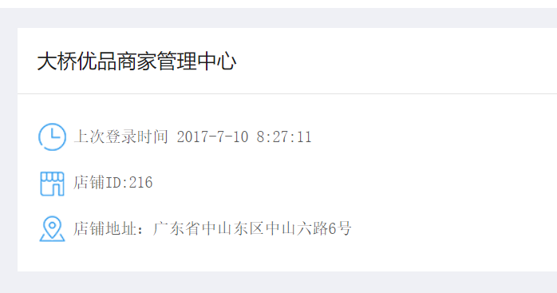
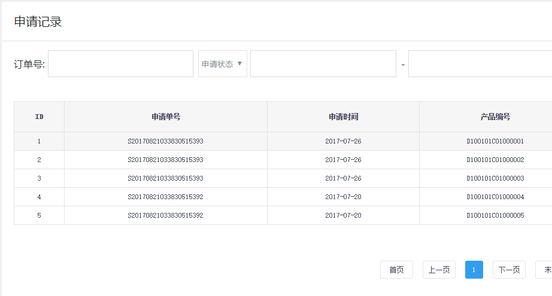
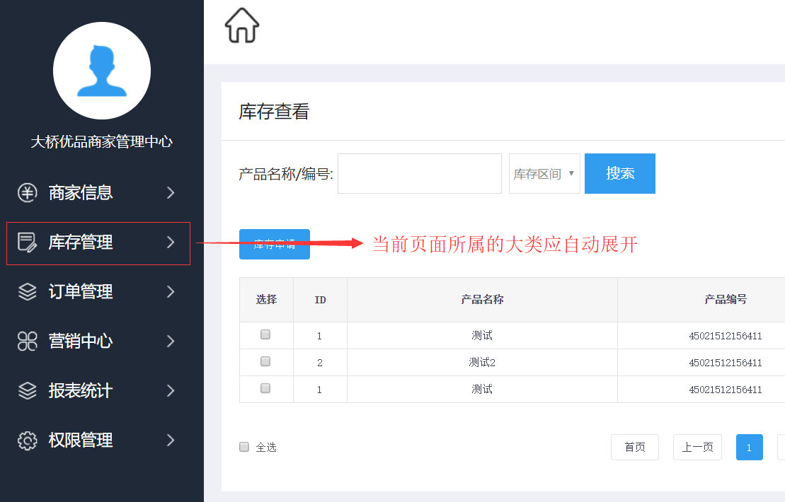
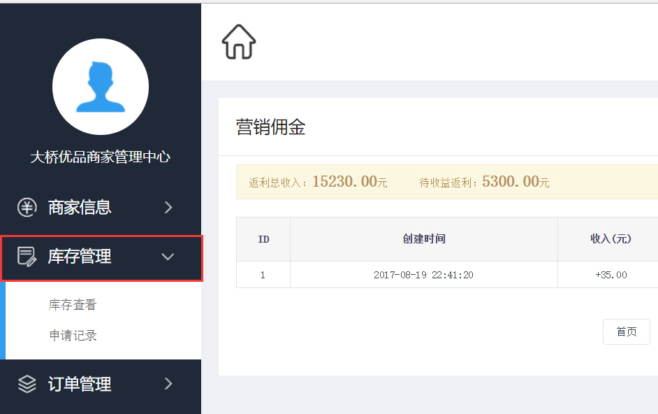
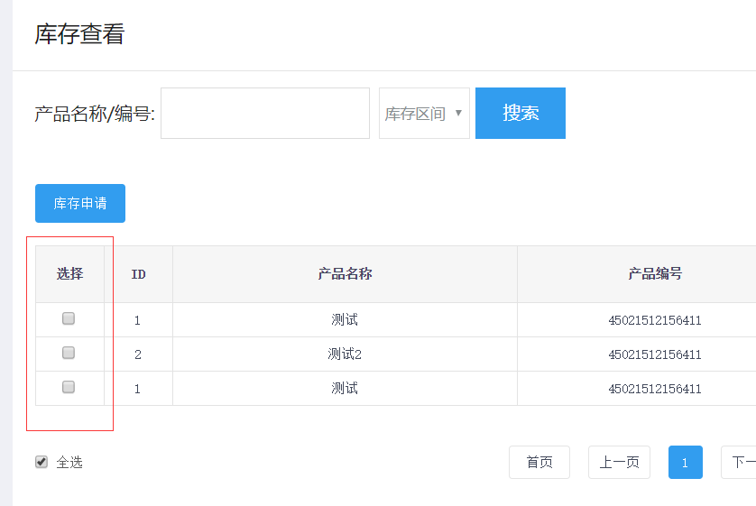
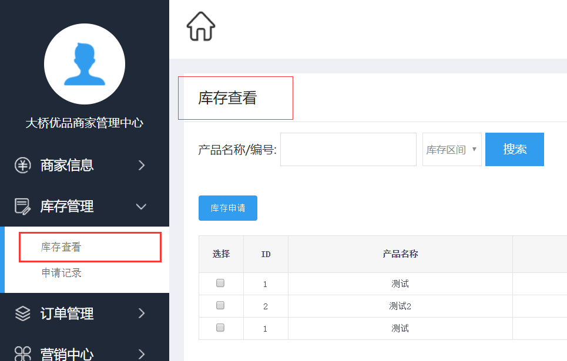
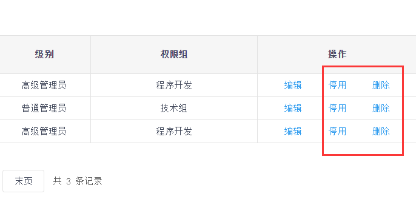
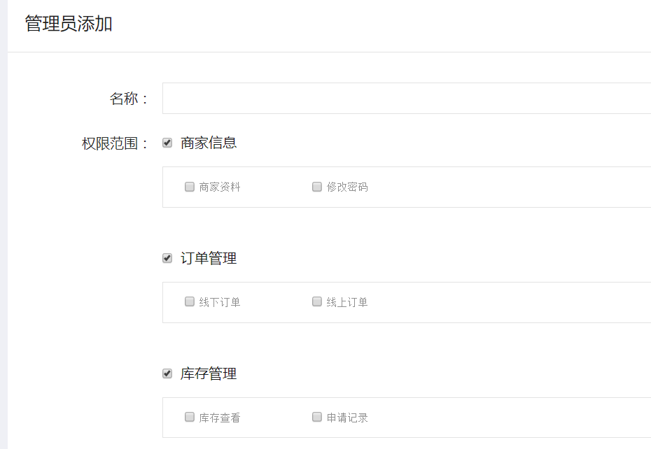
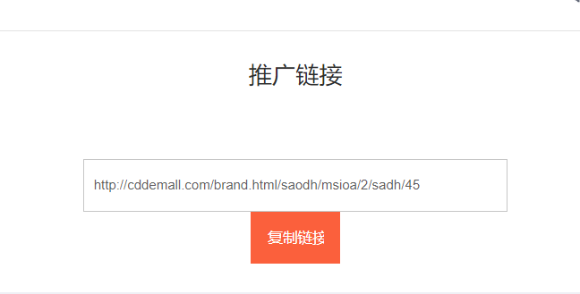

后台
| 序号 | 页面 | 视口版本 | 问题截图 | 问题描述 | 改进方案 | 优先级 | 备注（改进说明） |
|---|---|---|---|---|---|---|---|
| 所有页面 | PC |  | 页面上部分区域中文字体是宋体，不够美观 | 建议网页默认中文字体使用微软雅黑，更为美观 | 低 | ||
| 所有页面 | PC |  | 页面上部分区域字号是12px，偏小 | 建议改为14px，更易于阅读 | 低 | ||
| 后台所有内页 | PC |  | 后台内页导航不够清晰，操作者易迷失位置，不知道当前是在哪一个大类下面。 | 左侧的子分类导航中当前页面所属的大类应自动展开，将左侧固定或者右侧内容放入框架（iframe）。 | 高 | ||
| 后台所有内页 | PC |  | 左侧导航大类展开后无法点击关闭 | 左侧导航大类展开后应可以再次点击关闭 | 中 | ||
|
http://sz7.ni8.com/dqsj/member/abundance.php http://sz7.ni8.com/dqsj/member/return_order.php http://sz7.ni8.com/dqsj/member/minister.php http://sz7.ni8.com/dqsj/member/create.php 等所有涉及到批量操作的界面 |
PC |  | "全选"功能未实现 | 实现 | 高 | ||
| 后台所有内页 | PC |  | 当前页面在左侧导航中的链接没有突出显示的效果（active效果） | 添加突出显示的效果（active效果） | 高 | ||
|
http://sz7.ni8.com/dqsj/member/create.php http://sz7.ni8.com/dqsj/member/bind.php |
PC |  | 删除或停用一个项目之前没有确认提示 | 删除或停用一个项目时应弹出确认提示，以减少误操作。 | 中 | ||
| http://sz7.ni8.com/dqsj/member/manage_show.php | PC |  | 点击父权限不能全部选中子权限 | 点击父权限应全部选中子权限 | 高 | ||
| http://sz7.ni8.com/dqsj/member/indeed.php | PC |  | “复制链接”按钮代码错误，且未实现点击复制链接的功能 | 修复这个问题 | 高 |
{kind=link}
{kind=link}
{kind=link}
{kind=link}
{kind=link}
{kind=link}
{kind=link}
{kind=link}
{kind=link}